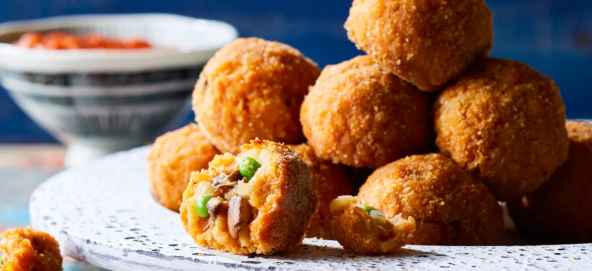

Sicilian Rice Balls with Mushrooms and Peas

- PREP-TIME: 40 MINUTES / READY IN: 1 HOUR
- MAKES 16 RICE BALLS
Rice balls, or arancini, are a popular Sicilian snack of leftover cooked rice mixed
with other flavorful ingredients (usually meat sauce), breaded, and deep-fried. This
version is filled with a savory mixture of mushrooms, peas, and onion and then baked
to crispy perfection. Dip these scrumptious finger foods into a side of tangy
marinara sauce to get the full Italian experience. Perfect as a dinner party
appetizer or an afternoon snack! For more healthy meals inspiration,
check out our best vegan recipes.
INGREDIENTS
- 4 cups cubed Yukon gold potatoes
- 2 cups cooked brown rice
- 2 cups oil-free store-bought or homemade marinara sauce
- ¼ cup unsweetened, unflavored plant-based milk
- ¼ cup + 1 tablespoon nutritional yeast (optional)
- 3 cloves garlic, minced
- Sea salt, to taste
- Freshly ground black pepper, to taste
- 2 cups fresh cremini or button mushrooms, trimmed and chopped
- 1 cup chopped yellow onion
- 1 cup bread crumbs
- ½ cup fresh or frozen green peas
- 2 teaspoon finely chopped fresh basil or 1 teaspoon dried basil, crushed
- 1 teaspoon finely chopped fresh thyme or ½ teaspoon dried thyme, crushed
- Red pepper flakes (optional)
INSTRUCTIONS
- Preheat oven to 450°F. Line a large baking sheet with parchment paper. Place
potatoes in a steamer basket in a large saucepan. Add water to saucepan to
just below basket. Bring to boiling. Steam, covered, about 15 minutes or until
tender. Transfer potatoes to a large bowl; mash with a fork.
- Meanwhile, in a large saucepan combine rice, 1 cup of the marinara sauce, the
milk, the ¼ cup nutritional yeast (if using), and 2 of the minced garlic cloves.
Bring to boiling; reduce heat to medium-low. Simmer, uncovered, 7 to 10 minutes
or until liquid is absorbed. Remove from heat. Season with salt and black pepper.
Add the rice mixture to potatoes; stir to combine.
- For filling, in a large skillet cook mushrooms, onion, and the remaining 1
clove minced garlic over medium about 10 minutes or until onion is tender,
stirring frequently and adding water, 1 to 2 tablespoons at a time, as needed
to prevent sticking. Add the remaining 1 tablespoon nutritional yeast
(if using), 1 tablespoon of the bread crumbs, the peas, basil, thyme, crushed
red pepper (if using), and salt to taste. Cook for about 3 minutes or until
heated through. Remove from heat. Let stand about 5 minutes or until mixture
is cool enough to handle.
- Place the remaining bread crumbs in a shallow dish. Shape ¼ cup rice mixture
into a 2- to 2½ -inch patty, dusting your hands with bread crumbs if the mixture
sticks to them. Spoon 1 tablespoon of filling onto center of the patty; fold
edges of patty over filling to cover and roll into a ball. Roll each ball in
bread crumbs to coat; place on the prepared baking sheet. Repeat with remaining
rice mixture, filling, and bread crumbs.
- Bake for 20 to 25 minutes or until lightly browned. Heat up the remaining 1 cup
marinara sauce. Serve with rice balls.
Main page